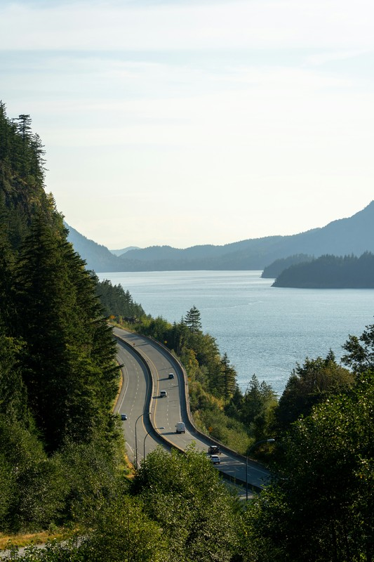
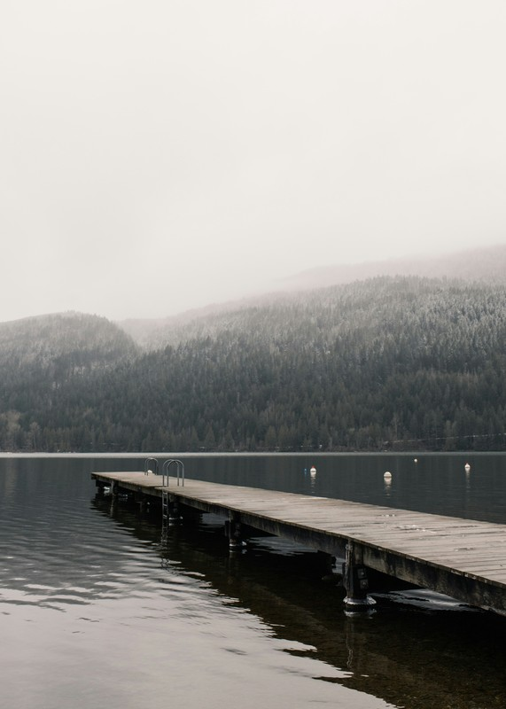

British Columbia
These are pictures from Brtish columbia where I served my mission. it was such a beautiful setting for spiritual growth.


These are pictures from Brtish columbia where I served my mission. it was such a beautiful setting for spiritual growth.

